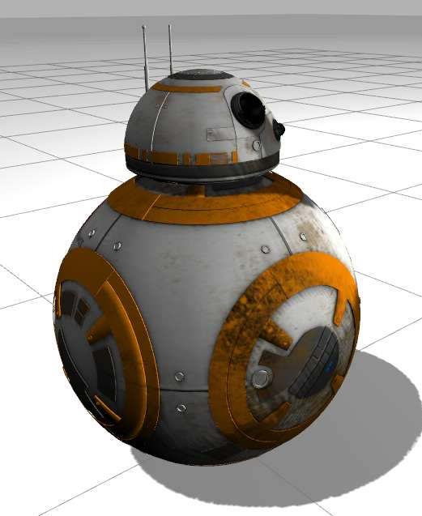
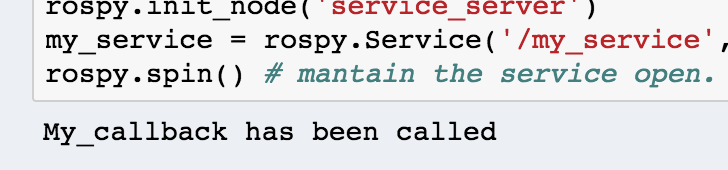

<img src="img/bb8.jpg" width="500" />
<!-- <img src="img/rosject.png" width="250" style="float:left;" /> --><!-- * ROSject Link: http://bit.ly/2LPIBeb* Package Name: **bb_8_gazebo*** Launch File: **main.launch**--><b>Estimated time to completion:</b> 3 hours<br><br><b>What will you learn with this unit?</b>* <a href="#how_to_give_a_service">How to give a service</a>* <a href="#create_your_own_service_server_message">Create your own service server message</a>Estimated time to completion: 3 hours
What will you learn with this unit?
Until now, you have just been calling services that others nodes provided. But now, you are going to create your own service!Until now, you have just been calling services that others nodes provided. But now, you are going to create your own service!
<p style="background:#407EAF;color:white;">**Example 3.7**</p>Example 3.7
Execute the following Python code <a href="#prg-3-7">simple_service_server.py</a> by clicking on it and then clicking on the play button on the top right-hand corner of the IPython notebook.<br> <div class='white_bg'><img src="img/font-awesome_step-forward.png" style="float:left"/><br><br></div><br><br>You can also press **<i>[CTRL]+[Enter]</i>** to execute it.<br>Execute the following Python code simple_service_server.py by clicking on it and then clicking on the play button on the top right-hand corner of the IPython notebook.

<p style="background:#3B8F10;color:white;" id="prg-3-7">**Python Program {3.7}: simple_service_server.py** </p><br>Python Program {3.7}: simple_service_server.py
#! /usr/bin/env pythonimport rospyfrom std_srvs.srv import Empty, EmptyResponse # you import the service message python classes generated from Empty.srv.def my_callback(request): print "My_callback has been called" return EmptyResponse() # the service Response class, in this case EmptyResponse #return MyServiceResponse(len(request.words.split())) rospy.init_node('service_server') my_service = rospy.Service('/my_service', Empty , my_callback) # create the Service called my_service with the defined callbackrospy.spin() # mantain the service open.<p style="background:#3B8F10;color:white;">**END Python Program {3.7}: simple_service_server.py** </p>END Python Program {3.7}: simple_service_server.py
Did something happen?Of course not! At the moment, you have just created and started the Service Server. So basically, you have put this service available for anyone to call it. Did something happen?
Of course not! At the moment, you have just created and started the Service Server. So basically, you have put this service available for anyone to call it.
This means that, if you do a **<i>rosservice list</i>**, you will be able to visualize this service among the list of available services.This means that, if you do a rosservice list, you will be able to visualize this service among the list of available services.
<table style="float:left;background: #407EAF"><tr><th><p class="transparent">Execute in WebShell #1</p></th></tr></table>|
Execute in WebShell #1 |
|---|
rosservice listAmong the list of all available services, you should see the **/my_service** service.Among the list of all available services, you should see the /my_service service.
/base_controller/command_select/bb8/camera1/image_raw/compressed/set_parameters/bb8/camera1/image_raw/compressedDepth/set_parameters/bb8/camera1/image_raw/theora/set_parameters.../my_service...Now, you have to actually **CALL** it. So, call the **/my_service** service manually. Remember the calling structure discussed in the previous chapter and don't forget to TAB-TAB to autocomplete the structure of the Service message.Now, you have to actually CALL it. So, call the /my_service service manually. Remember the calling structure discussed in the previous chapter and don't forget to TAB-TAB to autocomplete the structure of the Service message.
<table style="float:left;background: #407EAF"><tr><th><p class="transparent">Execute in WebShell #1</p></th></tr></table><br>|
Execute in WebShell #1 |
|---|
rosservice call /my_service [TAB]+[TAB]Did it work? You should've seen the message **'My callback has been called'** printed at the output of the cell with the Python code. Great!Did it work? You should've seen the message 'My callback has been called' printed at the output of the cell with the Python code. Great!
<img src="img/my_service_called.png" width="400" />
**INFO**: Note that, in the example, there is a commented line in the **my_callback** function. That gives you an example of how you would access the request given by the caller of your service. It's always **request.<i>variables_in_the_request_part_of_srv_message**.INFO: Note that, in the example, there is a commented line in the my_callback function. That gives you an example of how you would access the request given by the caller of your service. It's always request.variables_in_the_request_part_of_srv_message.
So, for instance, let's do a flashback to the previous Chapter. Do you remember Example 3.5? Where you had to perform calls to a service in order to delete an object in the simulation? Well, for that case, you were passing to the Service Server the name of the object to delete in a variable called **model_name**. So. if you wanted to access the value of that **model_name** variable in the Service Server, you would have to do it like this:So, for instance, let's do a flashback to the previous Chapter. Do you remember Example 3.5? Where you had to perform calls to a service in order to delete an object in the simulation? Well, for that case, you were passing to the Service Server the name of the object to delete in a variable called model_name. So. if you wanted to access the value of that model_name variable in the Service Server, you would have to do it like this:
request.model_nameQuite simple, right?Quite simple, right?
That commented line also shows you what type of object you should return. Normally, the **Response** Python class is used. It always has the structure **name_of_the_messageResponse()**. That's why, for the example code shown above, since it uses the **Empty** service message, the type of object that returns is **EmptyResponse()**. But, if your service uses another type of message, let's say one that is called **MyServiceMessage**, then the type of object that you would return would be **MyServiceMessageResponse()**.That commented line also shows you what type of object you should return. Normally, the Response Python class is used. It always has the structure name_of_the_messageResponse(). That's why, for the example code shown above, since it uses the Empty service message, the type of object that returns is EmptyResponse(). But, if your service uses another type of message, let's say one that is called MyServiceMessage, then the type of object that you would return would be MyServiceMessageResponse().
<p style="background:#407EAF;color:white;">END **Example 3.7**</p>END Example 3.7
<p style="background:#EE9023;color:white;">**Exercise 3.2**</p>Exercise 3.2
* The objective of this exercise 3.2 is to create a service that when called, BB8 robot moves in a square like trajectory.* You can work on a new package or use the one you created for exercise 3.1, called **unit_3_services**.* Create a Python file that has a class inside. This class has to allow the movement of the BB-8 in a square like movement <a href="#fig-3.1">{Fig-3.1}</a>. This class could be called, for reference, **MoveBB8**. And the Python code that contains it, could be called **move_bb8.py**.<br>To move the BB-8 robot, you just have to write into the **/cmd_vel** topic, as you did in the Topics Units.<br>Bear in mind that although this is a simulation, BB-8 has weight and, therefore, it won't stop immediately due to inertia.<br>Also, when turning, friction and inertia will be playing a role. Bear in mind that by only moving through /cmd_vel, you don't have a way of checking if it turned the way you wanted (this is known as an open loop system).Unless, of course, you find a way to have some positional feedback information. That's a challenge for advanced AstroMech builders (if you want to try, think about using the /odom topic).<br>But for considering the movement Ok, you just have to perform more or less a square. It doesn't have to be perfect.* Add a Service Server that accepts an <b>Empty</b> service message and activates the square movement. This service could be called **/move_bb8_in_square**.<br>This activation will be done through a call to the Python class that you just have generated, called **MoveBB8**.<br>For that, you have to create a very similar Python file as <a href="#prg-3-7">simple_service_server.py</a>. You could call it **bb8_move_in_square_service_server.py**.* Create a launch file called **start_bb8_move_in_square_service_server.launch**. Inside it, you have to start a node that launches the **bb8_move_in_square_service_server.py** file. * Launch **start_bb8_move_in_square_service_server.launch** and check that, when called through the WebShell, BB-8 moves in a square.* Now, create a new Python file, called **bb8_move_in_square_service_client.py**, that calls the service **/move_bb8_in_square**. Remember how it was done in the previous chapter: **Services Part 1**.<br>Then, generate a new launch file called **call_bb8_move_in_square_service_server.launch**, that executes the code in the **bb8_move_in_square_service_client.py** file.* Finally, when you launch this **call_bb8_move_in_square_service_server.launch** file, BB-8 should move in a square.<p style="background:#EE9023;color:white;">END **Exercise 3.2**</p>END Exercise 3.2
<figure> <img id="fig-3.1" src="img/bb8_excercice.png"></img> <center> <figcaption>Fig.3.1 - BB8 Square Movement Diagram</figcaption></center></figure><p style="background:green;color:white;">Solution Exercise 3.2</p>Solution Exercise 3.2
Please Try to do it by yourself unless you get stuck or need some inspiration. You will learn much more if you fight for each exercise.Please Try to do it by yourself unless you get stuck or need some inspiration. You will learn much more if you fight for each exercise.
<img src="img/robotignite_logo_text.png"/>
Follow this link to open the solutions notebook for Unit3 Services Part2: [solutions_unit3_services_part2](extra_files/solutions_unit3_services_part2.ipynb)Follow this link to open the solutions notebook for Unit3 Services Part2: solutions_unit3_services_part2
<p style="background:green;color:white;">END Solution Exercise 3.2</p>END Solution Exercise 3.2
## How to create your own service message<p id="create_your_own_service_server_message"></p>So, what if none of the service messages that are available in ROS fit your needs? Then, you create your own message, as you did with the Topic messages.<br><br>In order to create a service message, you wil have to follow the next steps:So, what if none of the service messages that are available in ROS fit your needs? Then, you create your own message, as you did with the Topic messages.
In order to create a service message, you wil have to follow the next steps:
<p style="background:#407EAF;color:white;">**Example 3.8**</p>Example 3.8
1) Create a package like this:1) Create a package like this:
<table style="float:left;background: #407EAF"><tr><th><p class="transparent">Execute in WebShell #1</p></th></tr></table><br>|
Execute in WebShell #1 |
|---|
roscd;cd ..;cd srccatkin_create_pkg my_custom_srv_msg_pkg rospy2) Create your own Service message with the following structure. You can put as many variables as you need, of any type supported by ROS: <a href="http://wiki.ros.org/msg">ROS Message Types</a>. Create a **<i>srv</i>** folder inside your package , as you did with the topics **<i>msg</i>** folder. Then, inside this **<i>srv</i>** folder, create a file called **<i>MyCustomServiceMessage.srv</i>**. You can create with the IDE or the WebShell, as you wish.2) Create your own Service message with the following structure. You can put as many variables as you need, of any type supported by ROS: ROS Message Types. Create a srv folder inside your package , as you did with the topics msg folder. Then, inside this srv folder, create a file called MyCustomServiceMessage.srv. You can create with the IDE or the WebShell, as you wish.
<table style="float:left;background: #407EAF"><tr><th><p class="transparent">Execute in WebShell #1</p></th></tr></table><br>|
Execute in WebShell #1 |
|---|
roscd my_custom_srv_msg_pkg/mkdir srvvim srv/MyCustomServiceMessage.srvYou can also create the **<i>MyCustomServiceMessage.srv</i>** through the IDE if you don't feel confortable with vim.You can also create the MyCustomServiceMessage.srv through the IDE if you don't feel confortable with vim.
The <b>MyCustomServiceMessage.srv</b> could be something like this:The MyCustomServiceMessage.srv could be something like this:
float64 radius # The distance of each side of the squareint32 repetitions # The number of times BB-8 has to execute the square movement when the service is called---bool success # Did it achieve it?## How to Prepare CMakeLists.txt and package.xml for Custom Service CompilationYou have to edit two files in the package, in a similar way as we explained for Topics:* CMakeLists.txt* package.xmlYou have to edit two files in the package, in a similar way as we explained for Topics:
You will have to edit four functions inside CMakeLists.txt:* <span class="ign_green"><a href="#find_package">find_package()</a></span>* <span class="ign_green"><a href="#add_service_files">add_service_files()</a></span>* <span class="ign_green"><a href="#generate_messages">generate_messages()</a></span>* <span class="ign_green"><a href="#catkin_package">catkin_package()</a></span>You will have to edit four functions inside CMakeLists.txt:
All the packages needed to COMPILE the messages of topic, services, and actions go here. It's only getting its paths, and not really importing them to be used in the compilation.<br>The same packages you write here, will go in <b>package.xml,</b> stating them as <b>build_depend</b>.All the packages needed to COMPILE the messages of topic, services, and actions go here. It's only getting its paths, and not really importing them to be used in the compilation.
The same packages you write here, will go in package.xml, stating them as build_depend.
find_package(catkin REQUIRED COMPONENTS std_msgs message_generation)### <span style="color: green;" id="add_service_files">II. add_service_files()</span>This function contains a list with all of the service messages defined in this package (defined in the srv folder).<br>For our example:This function contains a list with all of the service messages defined in this package (defined in the srv folder).
For our example:
add_service_files( FILES MyCustomServiceMessage.srv)### <span style="color: green;" id="generate_messages">III. generate_messages()</span>Here is where the packages needed for the service messages compilation are imported.Here is where the packages needed for the service messages compilation are imported.
generate_messages( DEPENDENCIES std_msgs)### <span style="color: green;" id="catkin_package">IV. catkin_package()</span>State here all of the packages that will be needed by someone that executes something from your package.All of the packages stated here must be in the **package.xml** file as **<exec_depend>**.State here all of the packages that will be needed by someone that executes something from your package. All of the packages stated here must be in the package.xml file as <exec_depend>.
catkin_package( CATKIN_DEPENDS rospy)Once you're done, you should have something similar to this:Once you're done, you should have something similar to this:
cmake_minimum_required(VERSION 2.8.3)project(my_custom_srv_msg_pkg)## Here go all the packages needed to COMPILE the messages of topic, services and actions.## Its only geting its paths, and not really importing them to be used in the compilation.## Its only for further functions in CMakeLists.txt to be able to find those packages.## In package.xml you have to state them as buildfind_package(catkin REQUIRED COMPONENTS std_msgs message_generation)## Generate services in the 'srv' folder## In this function will be all the action messages of this package ( in the action folder ) to be compiled.## You can state that it gets all the actions inside the action directory: DIRECTORY action## Or just the action messages stated explicitly: FILES my_custom_action.action## In your case you only need to do one of two things, as you wish.add_service_files( FILES MyCustomServiceMessage.srv)## Here is where the packages needed for the action messages compilation are imported.generate_messages( DEPENDENCIES std_msgs)## State here all the packages that will be needed by someone that executes something from your package.## All the packages stated here must be in the package.xml as exec_dependcatkin_package( CATKIN_DEPENDS rospy)include_directories( ${catkin_INCLUDE_DIRS})1. Add all of the packages needed to compile the messages.<br>In this case, you only need to add the **<i>message_generation</i>**.<br>Your will have to import those packages as **<build_depend>**.<br><br>2. On the other hand, if you need a package for the execution of the programs inside your package, you will have to import those packages as **<exec_depend>**.In this case, you will only need to add to your **package.xml** file these 2 lines:In this case, you will only need to add to your package.xml file these 2 lines:
<build_depend>message_generation</build_depend><build_export_depend>message_runtime</build_export_depend><exec_depend>message_runtime</exec_depend>So, at the end, you should have something similar to this:So, at the end, you should have something similar to this:
<?xml version="1.0"?><package format="2"> <name>my_custom_srv_msg_pkg</name> <version>0.0.0</version> <description>The my_custom_srv_msg_pkg package</description> <maintainer email="user@todo.todo">user</maintainer> <license>TODO</license> <buildtool_depend>catkin</buildtool_depend> <build_depend>rospy</build_depend> <build_depend>std_msgs</build_depend> <build_depend>message_generation</build_depend> <build_export_depend>rospy</build_export_depend> <exec_depend>rospy</exec_depend> <build_export_depend>std_msgs</build_export_depend> <exec_depend>std_msgs</exec_depend> <build_export_depend>message_runtime</build_export_depend> <exec_depend>message_runtime</exec_depend> <export> </export></package>Once you're done, compile your package and source the newly generated messages:Once you're done, compile your package and source the newly generated messages:
roscd;cd ..catkin_makesource devel/setup.bash<span style="color:red;">**Important!!** When you compile new messages through catkin_make, there is an extra step that needs to be done. You have to type in the WebShell, in the **catkin_ws** directory, the following command: **<i>source devel/setup.bash</i>**.<br><br>This command executes the bash file that sets, among other things, the newly generated messages created with **<i>catkin_make</i>**.<br>If you don't do this, it might give you a Python import error, saying that it doesn't find the message generated.</span>
Important!! When you compile new messages through catkin_make, there is an extra step that needs to be done. You have to type in the WebShell, in the catkin_ws directory, the following command: source devel/setup.bash.
This command executes the bash file that sets, among other things, the newly generated messages created with catkin_make.
If you don't do this, it might give you a Python import error, saying that it doesn't find the message generated.
You should see among all the messages something similar to:**<i>Generating Python code from SRV my_custom_srv_msg_pkg/MyCustomServiceMessage</i>**To check that you have the new service message in your system, and ready to be used, type the following:You should see among all the messages something similar to:
Generating Python code from SRV my_custom_srv_msg_pkg/MyCustomServiceMessage
To check that you have the new service message in your system, and ready to be used, type the following:
<table style="float:left;background: #407EAF"><tr><th><p class="transparent">Execute in WebShell #1</p></th></tr></table>|
Execute in WebShell #1 |
|---|
rossrv list | grep MyCustomServiceMessageIt should output something like:It should output something like:
<p style="background: #407EAF">WebShell #1 Output</p>WebShell #1 Output
user ~ $ rossrv list | grep MyCustomServiceMessagemy_custom_srv_msg_pkg/MyCustomServiceMessageThat's it! You have created your own Service Message. Now create a Service Server that uses this type of message.It could be something similar to this:That's it! You have created your own Service Message. Now create a Service Server that uses this type of message.
It could be something similar to this:
<p style="background:#3B8F10;color:white;" id="prg-3-3">**Python Program {3.3}: custom_service_server.py** </p><br>Python Program {3.3}: custom_service_server.py
#! /usr/bin/env pythonimport rospyfrom my_custom_srv_msg_pkg.srv import MyCustomServiceMessage, MyCustomServiceMessageResponse # you import the service message python classes # generated from MyCustomServiceMessage.srv.def my_callback(request): print "Request Data==> radius="+str(request.radius)+", repetitions = "+str(request.repetitions) my_response = MyCustomServiceMessageResponse() if request.radius > 5.0: my_response.success = True else: my_response.success = False return my_response # the service Response class, in this case MyCustomServiceMessageResponserospy.init_node('service_client') my_service = rospy.Service('/my_service', MyCustomServiceMessage , my_callback) # create the Service called my_service with the defined callbackrospy.spin() # mantain the service open.<p style="background:#3B8F10;color:white;">**END Python Program {3.3}: custom_service_server.py** </p><br>END Python Program {3.3}: custom_service_server.py
<p style="background:#407EAF;color:white;">END **Example 3.8**</p>END Example 3.8
<img src="img/robotignite_logo_text.png"/>
For evaluating this Quiz, we will ask you to perform different tasks. For each task, very **specific instructions** will be provided: name of the package, names of the launch files and Python scripts, topic names to use, etc. It is **VERY IMPORTANT** that you strictly follow these instructions, since they will allow our automated correction system to properly test your Quiz, and assign a score to it. If the names you use are different from the ones specified in the exam instructions, your exercise will be marked as **FAILED**, even though it works correctly.For evaluating this Quiz, we will ask you to perform different tasks. For each task, very specific instructions will be provided: name of the package, names of the launch files and Python scripts, topic names to use, etc.
It is VERY IMPORTANT that you strictly follow these instructions, since they will allow our automated correction system to properly test your Quiz, and assign a score to it. If the names you use are different from the ones specified in the exam instructions, your exercise will be marked as FAILED, even though it works correctly.
* Upgrade the python file **move_bb8.py**, so that it can now move BB-8 in a square of variable size.* Create a new Python file, called **bb8_move_custom_service_server.py**. Inside this file, modify the code you used in **Exercise 3.2**, which contained a Service Server that accepted an Empty Service message to activate the square movement. This new service will be called **/move_bb8_in_square_custom**. This new service will have to use service messages of type **BB8CustomServiceMessage**, which is defined here:The <b>BB8CustomServiceMessage.srv</b> will be something like this:The BB8CustomServiceMessage.srv will be something like this:
float64 side # The distance of each side of the squareint32 repetitions # The number of times BB-8 has to execute the square movement when the service is called---bool success # Did it achieve it?* Use the data passed to this new **/move_bb8_in_square_custom** to change the way BB-8 moves.<br>Depending on the **side** value, the service must move the BB-8 robot in a square movement based on the **side** given.<br>Also, the BB-8 must repeat the shape as many times as indicated in the **repetitions** variable of the message.<br> Finally, it must return **True** if everything went OK in the **success** variable. * Create a new launch file, called **start_bb8_move_custom_service_server.launch**, that launches the new **bb8_move_custom_service_server.py** file.* Test that, when calling this new **/move_bb8_in_square_custom** service, BB-8 moves accordingly. This means, the square is performed taking into account the **side** and **repetitions** variables.* Create a new service client that calls the service **/move_bb8_in_square_custom**, and makes BB-8 move in a small square **twice**, and in a bigger square **once**. It will be called **bb8_move_custom_service_client.py**. The launch that starts it will be called **call_bb8_move_in_square_custom_service_server.launch**.<figure> <img id="fig-3.2" src="img/basic_unit3_variable_square.png"></img> <center> <figcaption>Fig.3.2 - BB8 Dynamic Square Diagram</figcaption></center></figure><p style="background:green;color:white;">Specifications</p>Specifications
* The name of the package where you'll place all the code related to the Quiz will be **services_quiz**.* The name of the launch file that will start your Service Server will be **start_bb8_move_custom_service_server.launch**.* The name of the service will be **/move_bb8_in_square_custom**.* The name of your Service message file will be **BB8CustomServiceMessage.srv**.* The name of the launch file that will call your Services Server will be **call_bb8_move_in_square_custom_service_server.launch**.<p style="background:green;color:white;">Quiz Correction</p><br>When you have finished the Quiz, you can correct it in order to get a Mark. For that, just click on the following button at the top of this Notebook.<br><br><img src="img/correct_quiz_btn.png" width="150"/>Quiz Correction

<p style="background:red;color:white;">IMPORTANT</p><br><img src="img/warning_mark.png" width="200" /><br>Quizes can only be done once. This means that, once you correct your Quiz, and get a score for it, you won't be able to do it again and improve your score. So, be sure enough when you decide to correct your Quiz!IMPORTANT
Congratulations! You are now ready to add All of the Services that you want to your own personal astromech droid!Congratulations! You are now ready to add All of the Services that you want to your own personal astromech droid!
ROS Services: http://wiki.ros.org/ServicesSimple Service and Client (Python): http://wiki.ros.org/ROS/Tutorials/WritingServiceClient%28python%29srv Files: http://wiki.ros.org/srvROS Services: http://wiki.ros.org/Services
Simple Service and Client (Python): http://wiki.ros.org/ROS/Tutorials/WritingServiceClient%28python%29
srv Files: http://wiki.ros.org/srv